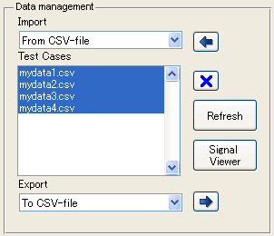

Getting started with sldvmisscovtool
(1) Run sldvmisscovtool
sldvmisscovtool
(2) Select an importing method from Data management panel > Import, then click

Note: The importing method is implemented as plug-in function. Therefore, you can add your own importing method by writing plug-in function. Here, it is assumed that From CSV-file which is prepared as a sample importing function is selected and the Test Cases are imported from sample csv files stored in cruise_control_data which is in the same folder with sldvmisscovtool.

(3) By clicking Signal Viewer enables you to create graphs for Test Cases selected in Test Cases listbox.
(4) At a Target Model Pane, you can select a model by clicking

button. If you select

Load Current model, the target model will be the current model given by bdroot command. Here, it is assumed that a sample model of this tool, sldvmiscovtool_sample.mdl is selected.

(5) At Coverage Panel, by clicking Record coverage button, simulations for test cases that are selected in the Test Cases listbox then accumulated model coverage can be measured. The measured model coverage will be stored in the Workspace with covData variable name. Note: If you enabled Model Coloring checkbox, you can highlight (colors) blocks that have received model coverage during simulation.

(6) By clicking Coverage Report, a coverage report will be created from covData. You can see coverage information that reached by given Test Cases.
(7) At SLDV panel, test cases for coverage objectives that are not reached by simulations for selected Test Cases will be automatically generated by clicking Analyze missing coverages button.

(8) Combined Report enables you to create coverage report for gathered coverage analysis for coverage data for selected TestCases in Data Management pane and for coverage data for TestCases created by missing coverage analysis in SLDV pane.


(9) By clicking Merge test cases, you can create a new test harness model in which Signal Builder block with 100% coverage test cases contained.